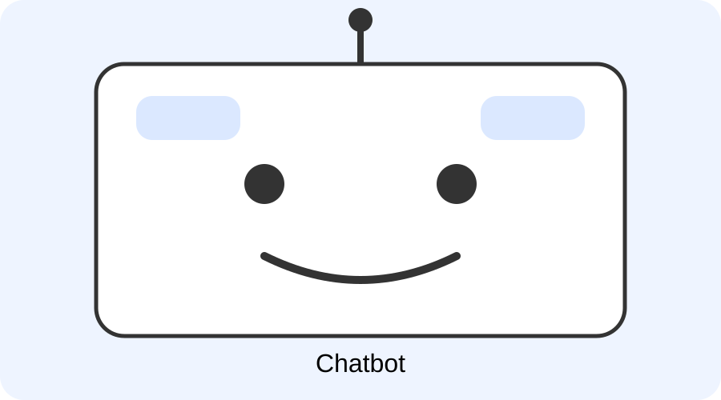

اسم الطالب: هلال هاني هلال حسب النبي
الرقم الجامعي: 2501132
المقرر: تطبيقات الإنترنت والمنصات الإلكترونية
أصبحت منصات الويب جزءًا أساسيًا من الحياة اليومية، إذ يعتمد عليها الأفراد والمؤسسات في التعليم والتجارة والخدمات الحكومية والتواصل وخدمة العملاء. ومع تزايد عدد مستخدمي المواقع والتطبيقات ظهرت الحاجة إلى وسائل سريعة تستطيع الإجابة عن الاستفسارات وتوجيه المستخدم دون انتظار طويل.
ومن التقنيات التي ساعدت على ذلك روبوتات الدردشة (Chatbots)، وهي برامج مصممة لإجراء محادثات مع المستخدمين من خلال الكتابة أو الصوت وتقديم معلومات أو تنفيذ خطوات محددة.

روبوت الدردشة هو برنامج حاسوبي يسمح للمستخدم بالتواصل مع نظام إلكتروني باستخدام أسلوب المحادثة. يكتب المستخدم سؤالًا أو طلبًا في نافذة مخصصة، ثم يقوم البرنامج بتحليل الرسالة وتحديد الرد أو الإجراء المناسب.
روبوتات الدردشة القائمة على القواعد: تعتمد على مجموعة من القواعد والسيناريوهات التي يحددها المطور مسبقًا، وهي مناسبة للمهام المحددة والأسئلة المتكررة، ولكن قدرتها على فهم الأسئلة غير المتوقعة محدودة.
روبوتات الدردشة المدعومة بالذكاء الاصطناعي: تستخدم تقنيات أكثر تقدمًا مثل معالجة اللغة الطبيعية والتعلم الآلي، وقد تعتمد على نماذج لغوية كبيرة، مما يمنحها مرونة أكبر في فهم أسئلة المستخدم.
| وجه المقارنة | القائمة على القواعد | المدعومة بالذكاء الاصطناعي |
|---|---|---|
| طريقة العمل | قواعد وسيناريوهات محددة مسبقًا | معالجة اللغة الطبيعية والذكاء الاصطناعي |
| المرونة | محدودة | أكثر مرونة |
| الاستخدام | الأسئلة والمهام المحددة والمتكررة | المحادثات والأسئلة الأكثر تنوعًا |
تبدأ العملية عندما يكتب المستخدم سؤاله في واجهة المحادثة. ترسل الواجهة الرسالة إلى النظام المسؤول عن الروبوت، ثم يحاول النظام التعرف على نوع الطلب وتحليل الرسالة وتحديد نية المستخدم. بعد ذلك يصل إلى البيانات المطلوبة ويكوّن الرد ويرسله للمستخدم.
تستخدم روبوتات الدردشة في خدمة العملاء للإجابة عن الأسئلة المتكررة وتوجيه المستخدم إلى الخدمة المناسبة، كما تستخدم في المتاجر الإلكترونية لمعرفة معلومات الشحن والإرجاع، وفي المنصات التعليمية لتقديم إرشادات حول استخدام المنصة ومواعيد الأنشطة والوصول إلى المحتوى.
من أبرز مميزات روبوتات الدردشة سرعة الاستجابة والقدرة على التعامل مع عدد كبير من المحادثات في الوقت نفسه، وتقليل الضغط الناتج عن الأسئلة البسيطة والمتكررة، وتوحيد المعلومات المقدمة للمستخدمين.
قد يفهم روبوت الدردشة السؤال بطريقة خاطئة، خاصة عندما تكون الجملة غامضة أو تحتوي على معلومات ناقصة. كما قد تصبح الإجابات قديمة إذا لم يتم تحديث قاعدة المعرفة. وتعد الخصوصية والأمان من التحديات الأساسية، لذلك يجب حماية البيانات وتوفير وسيلة للتواصل مع شخص حقيقي عند الحاجة.
أصبحت روبوتات الدردشة من الأدوات المهمة في منصات الويب الحديثة، لأنها توفر قناة تواصل مباشرة وسريعة بين المستخدم والنظام، ويمكن استخدامها في التعليم والتجارة الإلكترونية وخدمة العملاء. ومع ذلك، فإن نجاحها يعتمد على وضوح الهدف وجودة المعلومات وسهولة الحوار وحماية خصوصية المستخدم، مع أهمية وجود العنصر البشري عند الحاجة.